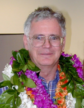

Please note: the AAS Obituaries are temporarily being hosted on this website while their full content is being ingested into the PubPub publishing platform newly adopted by the Bulletin of the American Astronomical Society. When the migration is complete, your existing links will take you to the final, migrated content. Contact peter.williams@aas.org with any questions.
Fred C. Gillette (1937-2001)
Fred C. Gillett, a true pioneer in the field of infrared astronomy, died on 22 April 2001, at the age of 64. Fred's scientific and technical contributions spanned the full range from ground-based to space-based IR astronomy, and underlay much of the progress that has been made in the field over the past 30 years. But he will be remembered best by those of us who were privileged to be his friends for his warmth and generosity, his wisdom, his remarkable technical intuition, and his refreshing lack of ego.
Fred was born in Minot, ND, on 7 February 1937. His undergraduate and graduate studies were completed at the University of Minnesota. He earned his PhD under Ed Ney in 1966. While a graduate student, he recognized that the advances taking place in IR detector technology would soon allow astronomers to fill in the spectral gap between the optical and the exciting new radio band. At Ney's urging, Fred went to Tucson to work with Frank Low, using Low's newly developed low-temperature bolometer in the design and construction of the first mid-infrared spectrometer capable of detecting 8-14 micron emission from nearby stars. One of the early observations Fred made with his new instrument was of Betelgeuse, in which spectrum he detected a broad emission feature. Identification of this feature with silicate dust marked a substantial step forward in our understanding of the composition and nature of interstellar dust and its role in star formation.
After graduate school, Fred continued his research in this rapidly emerging area of study, first at the University of California, San Diego, where he worked and taught for seven years, and then on the staff of the Kitt Peak National Observatory (now called National Optical Astronomy Observatories), where he also served a term as Acting Director. He was key in introducing both UCSD and KPNO to infrared instrumentation and the characteristics of observatories needed to best exploit the advances in detector technology. His leadership led to the development of a suite of photometric and spectroscopic instruments and telescope upgrades at both locations. During this time he published a number of seminal papers on stars, planets, and the Galactic Center, as well as on detector technology and optics. At this time Fred also dug into the classified world of strategic and tactical IR sensors, thus bringing to the field a wealth of valuable technology that would not otherwise have been available to astronomers.
Not long after arriving at KPNO, Fred became a member of the team of scientists and engineers that developed the Infrared Astronomy Satellite, one of NASA's most successful international projects: This was the first mission to prove the feasibility and value of cooling detectors and optics to within a few degrees of absolute zero, and required the talent and innovation of many physicists and engineers, eventually achieving or exceeding all of the technical and scientific goals that had been established for it. Fred's talent, insight and determination to make IRAS work played such a large role in its success that Charlie Pellerin, head of astrophysics at NASA from 1983 through 1992, often introduced Fred as "the man who saved IRAS."
IRAS made a huge impact on nearly all areas of astronomy. But one of the most important discoveries to come out of the mission was that of the so-called "Vega phenomenon." A few months before the launch of IRAS in 1983, Fred went to Rutherford Appleton Laboratory in England as one of the leaders of the team charged with establishing the absolute calibration of IRAS, as well as maintaining that calibration throughout the mission. Vega had been chosen as the primary calibration star, but was soon found to exhibit a large excess in the far infrared. Fred and his colleagues substituted other, more mature and better-behaved stars as calibration sources, but he realized that Vega's excess could be important. He therefore reprogrammed IRAS to make additional observations of Vega and some other IR excess stars, thus discovering the presence of circumstellar dust in orbit about these young stars. Calculations of the expected lifetime of these dust grains gave compelling evidence that larger bodies, planetesimals, must be present in these "debris disks," thereby providing the most direct evidence to date that the planet-forming process is going on throughout the Galaxy.
IRAS provided the proof-of-concept for the next two IR space missions, COBE in the US and ISO in Europe. Among the more ambitious NASA IR projects in the 1990's, which were begun in the wake of the IRAS success, were: (a) SIRTF, the Space Infrared Telescope Facility, also cooled by liquid cryogens; (b) SOFIA, the Stratospheric Observatory for IR Astronomy, a 2.5 m ambient temperature telescope, carried into the stratosphere by a modified Boeing 747; and (c) 2MASS, a 1-2.5 micron all-sky survey, utilizing modem detector arrays to provide the near-infrared complement to IRAS. While serving as a Visiting Senior Scientist at NASA Headquarters from August 1987 until August 1989, Fred made major technical and programmatic contributions to all of these projects. His leadership established the US collaboration with ESA on ISO; together with Susan Kleinmann, he ensured NASA's support for 2MASS; and he played a key role in guiding SIRTF and SOFIA safely forward to approval. By the time of his death, he could take comfort in knowing that all of these projects were well underway and nearing completion.
Fred ended his career as Project Scientist for the International Gemini Observatory, a pair of advanced 8 m telescopes on Mauna Kea, HI, and Cerro Pachon, Chile. Prior to taking on the role as Project Scientist, he had worked tirelessly to ensure that these major facilities would reach their full potential. Fred was the key player in convincing the astronomical community that these two telescopes should be optimized for work in the infrared, carried out the detailed calculations that showed how to build them, and then saw Gemini-North through to completion, and Gemini-South well on its way. Gemini-North has demonstrated unsurpassed IR performance in its initial tests. In spite of the toll already taken by his disease, he celebrated the dedication of the first of the two Geminis and was able to witness its initial operation and success.
Throughout his career Fred gave unselfishly of his time and his expertise in introducing young astronomers to IR astronomy, then mentoring them as they developed in the field. Although it was not in his nature to take credit for these efforts, his impact in this area was made abundantly evident at the time of his memorial service held for him in Tucson shortly after his death, when a surprising number of astronomers and engineers come forward to tell how Fred had started them on their way. He was such a quiet and unassuming person that it often came as a shock, even to those who knew him to realize how good a physicist and astronomer he was, and what wisdom and true insight he had accumulated over his life in science.
One of Fred's greatest passions outside of astronomy was cycling. He commuted to work and back for most of his life, winter and summer, rain or shine. He was an enthusiastic participant in long distance touring, and made converts to that activity of at least some of his colleagues. He particularly liked to ride up and down hills, loved the mountains in Arizona, and was in his glory on Hawaii, where he lived up on the flank of Mauna Loa. Fred also enjoyed hiking and was a good canoeist. But certainly his other great passion was his family. He was exceedingly proud and caring of them, and was always eager to talk,about their accomplishments and the events in their lives, especially so for his five grandchildren.
Fred's wife, Marian, his three children, five grandchildren, mother, brother and two sisters all survived him. He is also survived by a large number of devoted friends. All of us found it a pleasure and a rare privilege to have known him.
Photo courtesy of Gemini Observatory
Obituary written by: Larry Caroff (Sunnyvale, CA), Frank Low (Tucson, AZ)
BAAS Citation: BAAS, 2001, 33, 1567
SAO/NASA ADS Bibcode: 2001BAAS...33.1567C